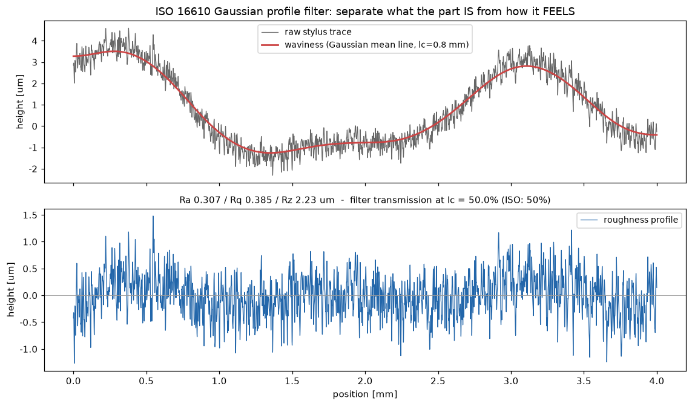
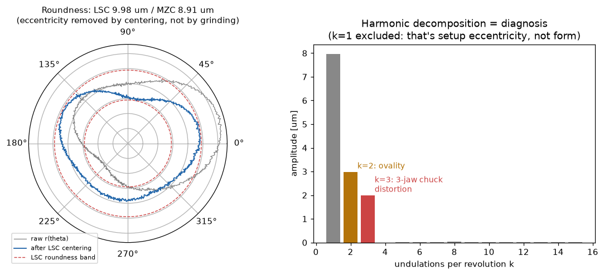

寸法計測メーカーの中核2計測——表面粗さ（ISO 16610/4287）と真円度（ISO 12181）——を定義から実装し、解析解との閉ループで検証。フィルタの透過率・基準円フィット・調和診断という「計測器の中身」を数字で示す。既存の計測・最適化ダッシュボード（カメラ校正Gage R&R・IM寸法測定・%GRR）と合わせてAccretech照準の計測スタックが揃う。
スタイラス軌跡は形状＋うねり＋粗さの重ね合わせ。ISO 16610-21のガウシアン輪郭フィルタ（λc=0.8mm）で平均線＝うねりを分離し、残差が粗さプロファイル。振幅透過率がλcでちょうど50%というISOの定義そのものを数値検証（実測50.0%）。パラメータはISO 4287：Ra・Rq・Rz（5基準長）。さらに純正弦波のRa=2A/πという解析解と実装を突き合わせる閉ループつき——「計測器を作る側」の検証作法。

スピンドル軌跡 r(θ) には偏心（k=1：段取りであって形状ではない）・楕円（k=2）・ロービング（k=3以上）・ノイズが混在。ISO 12181の基準円：LSC（最小二乗円）は1次調和係数で中心が閉形式で出る実務の主力、MZC（最小領域円）はChebyshev基準で半径バンドを直接最小化（常にLSC以下——本実装で10.8%タイト）。右のFFT調和分解は注入した振幅（偏心8・楕円3・3山2µm）をそのまま回収し、k=3のピーク＝3つ爪チャックの締め歪みという故障診断まで一直線。

関連（実装済み）：計測・最適化ダッシュボード（カメラ校正＋Gage R&R・ダイ間位置合わせ）・画像寸法測定（IM）（置き方フリー σ0.42µm）・%GRR計測能力。出所：accretech/surface_roundness.py。